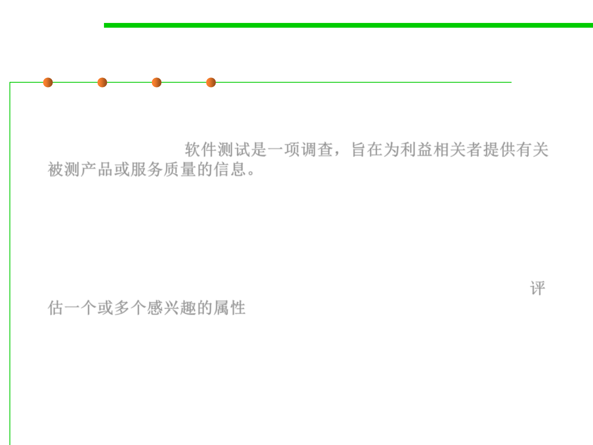

What is testing?
7.5 Testing and Test-First Programming
▪ Software testing is an investigation conducted to provide
stakeholders with information about the quality of the product or
service under test. 软件测试是一项调查，旨在为利益相关者提供有关
被测产品或服务质量的信息。
▪ Test techniques include the process of executing a program or
application with the intent of finding software bugs (errors or other
defects), and verifying that the software product is fit for use.
▪ Software testing involves the execution of a software component or
system component to evaluate one or more properties of interest.评
估一个或多个感兴趣的属性